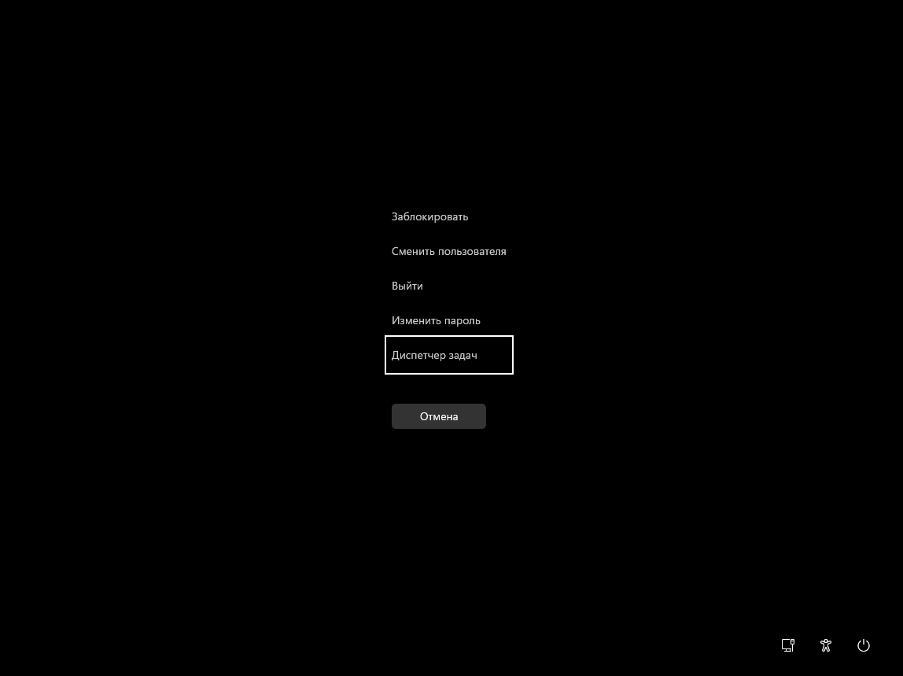
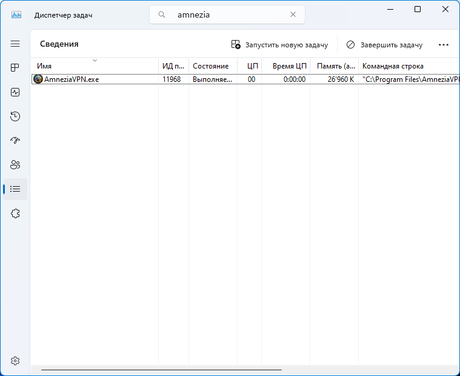
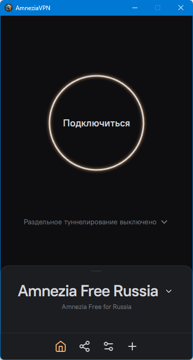
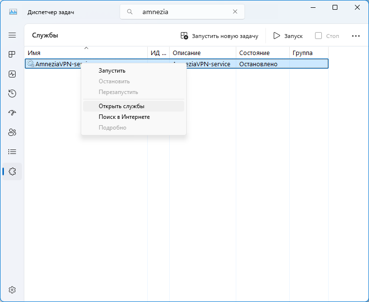
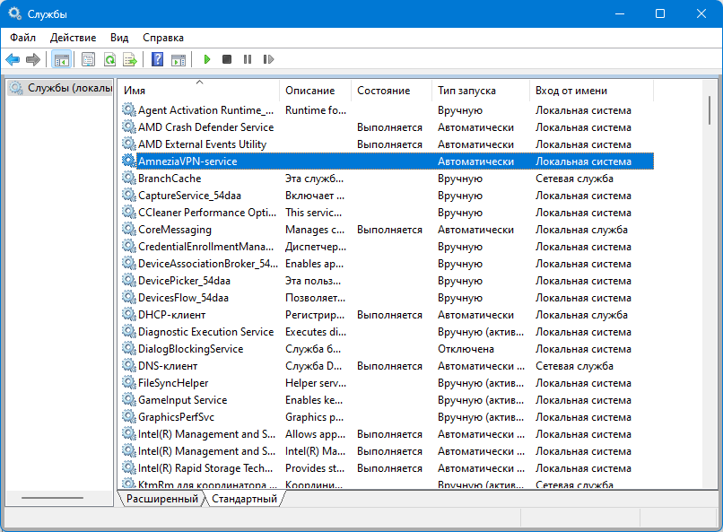

Коды ошибок
Error 100: UnknownError
Неизвестная ошибка - может возникнуть при самых разных обстоятельствах.
Решение:
- Перезагрузите приложение.
- Попробуйте очистить кеш приложения.
- Попробуйте удалить сервер или протокол и подключиться снова.
- Если ошибка повторяется отправьте логи на почту support@amnezia.org или в телеграм чат
Error 101: InternalError
Внутренняя ошибка - может возникать из-за некорректной работы QT-библиотек, или при других обстоятельствах
Решение:
- Перезагрузите приложение.
- Попробуйте очистить кеш приложения.
- Попробуйте удалить сервер или протокол и подключиться снова.
- Если ошибка повторяется отправьте логи на почту support@amnezia.org или в телеграм чат
Error 102: NotImplementedError
Ошибка может возникнуть, если создать файл с бекапом настроек, а потом попро�бовать восстановить настройки из этого бекапа в более старой версии приложения. Протоколы настроенные в новых версиях Amnezia, могут быть не совместимы со старой версией и наоборот.
Решение:
- Попробуйте изменить настройки,
- Проверьте, поддерживается ли протокол вашей версией приложения. Так например AmneziaWG не поддерживается версиями приложения старше 3, а OpenVPN over Cloak установленный на версии приложения старше 2.1.2 не будет работать на более новых версиях.
- Более подробную информацию вы найдете в таблице поддерживаемых протоколов для версии 4 и более новых версий и для версий 2.1.2-3.1.0
Error 103: AmneziaServiceNotRunning
Ошибка означает что не запущена служба Amnezia-service. Ошибка может возникнуть на Linux, Windows или MacOS. Проверьте запущена ли служба в диспетчере задач, если не запущена, то запустите и перезагрузите приложение.
1. Запустить службу для Windows можно через диспетчер задач нажав Ctrl+Alt+Del

2. Далее перейдите во вкладку "Сведения"

3. Введите вверху, в поле поиска/фильтрации, amnezia

4. Если в списке найденных процессов, отсутствует AmneziaVPN-service, перейдите во вкладку Службы, и обратите внимание на состояние службы AmneziaVPN-service

5. Если служба AmneziaVPN-service остановлена, на данном этапе, можно попробовать её запустить

6. Если служба AmneziaVPN-service запущена (Состояние: Выполняется), а во вкладке Сведения, присутствует процесс AmneziaVPN-service.exe

-9887f063bac6a6aa3d8e13befb64d3c9.png)
7. Попробуйте выполнить подключение, в клиенте AmneziaVPN

8. Если, из Диспетчера задач не получилось запустить AmneziaVPN-service, или для более детальной диагностики, можно из Диспетчера задач, открыть службы в Консоли управления.

9. Найдите AmneziaVPN-service в списке служб Консоли управления. Обратите внимание на Состояние и Тип запуска. По умолчанию, тип запуска AmneziaVPN-service, Автоматически.

10. Попробуйте запустить службу AmneziaVPN-service из Консоли управления

11. Если служба AmneziaVPN-service запустится, её состояние должно изменится на "Выполняется". После чего, можно попробовать выполнить Подключение в AmneziaVPN.
-51f0de748f0d7a54e597f9e5947dae1d.png)
Также, при попытке запуска AmneziaVPN-service из Консоли управления, может выводится сообщение об ошибке, с причиной её возникновения.
-a8ea1408f6f82d9b506f2f93e00357fb.png)
Для MacOS нужно предоставить разрешение для запуска службы Privacy Technologies OU в Login Items

Error 200: ServerCheckFailed
Возникает при попытке добавить новый сервер.
Решение:
Проверьте, что сервер соответствует требованиям Amnezia
Поддерживаемая архитектура процессора - x86-64
Операционная система - Linux, подходит Ubuntu 22.04 или Debian 11
Виртуализация - KVM
SSD - минимум 7 Гб
Оперативная память (RAM) - не меньше 1 Гб
Предустановленное ПО и панель управления не требуются
Error 201: ServerPortAlreadyAllocatedError
Эта ошибка означает, что порт, который нужен протоколу в Amnezia, уже используется другим ПО.
Решение:
У некоторых протоколов можно поменять порт:
- Для OpenVPN по-умолчанию используется рандомайзер портов, рекомендуемый диапазон 30000-50000, но можно поменять на любой другой порт .
- Для WireGuard по-умолчанию использует рандомайзер портов, рекомендуемый диапазон 30000-50000, но можно поменять на любой UDP порт.
- IKEv2 по умолчанию использует порты 500 и 4500, их нельзя менять.
- OpenVPN over Cloak по-умолчанию использует 443 порт, его можно менять, но мы не рекомендуем этого делать, так как 443 порт - это порт веб-трафика, по другим портам можно определить VPN-трафик даже если используется маскировка под веб-сайт.
- Для AmneziaWG так же используется рандомайзер портов, рекомендуемый диапазон 30000-50000, его также можно поменять на любой другой UDP порт вручную.
Проверьте, что у вас не установлено другое ПО, использующее порт протокола. Для Windows можно посмот�реть какие порты уже используются другими программами так:
- Нажмите Win+R,
- введите в строку cmd нажмите Enter,
- внести команду ниже
netstat!!! -a
- нажмите Enter
В консоли отобразится перечень используемых портов с указанием какое приложение или служба ими распоряжается. Можно сохранить этот список в файле netstat -a > имя.txt, по умолчанию он сохранится в (C:\User\Username*) , где Username - имя пользователя.Для Linux нам понадобится утилита netstat, если у вас ее нет, ее можно установить следующими командами:
- для RedHat и CentOS -
sudo yum install net-tools
- для Fedora 22+ -
dnf install net-tools
- для Debian/Ubuntu -
sudo apt-get install net-toolsВ консоле наберите
$ netstat -pnltuПо аналогии с Windows в консоли отобразится перечень используемых портов с указанием - какое приложение или служба ими распоряжается.
Проверьте, что на вашем сервере открыты необходимые для протоколов порты. Это можно посмотреть в меню панели управления виртуальным сервером в браузере. Если таких данных нет, отправьте запрос в службу поддержки хостинга.
Подключитесь к вашему серверу по SSH, или откройте консоль сервера через веб-сайт и пропишите там “sudo apt install lsof psmisc” , после чего повторите попытку установки.
Если это не помогло, попробуйте настроить сервер с более ранней версии Amnezia (Например с версии 2.1.2)
Error 202: ServerContainerMissingError
Ошибка значит, что контейн�ер с сервером отсутствует.
Возникает если приложение не подключается к серверу и при смене настроек.
Так же может возникать при удалении контейнера на сервере вручную без использования приложения.
Решение
- Заново добавьте сервер.
Error 203: ServerDockerFailedError
Ошибка: Сбой в работе Docker-контейнера сервера. Появляется при установке контейнера с VPN или изменении настроек протокола. Может возникнуть при удалении контейнера с сервером, или при удалении протокола без использования приложения.
Решение:
- Заново добавьте сервер.
Error 204: ServerCancelInstallation
Ошибка: Отмена установки сервера. Может возникнуть при отмене установки севера пользователем.
Решение:
Если вы не �отменяли установку сервера или хотите заново инициировать установку сервера, попробуйте повторить установку сервера с самого начала, или обратитесь в службу поддержки в телеграм чате, или напишите нам на почту support@amnezia.org
Error 205: ServerUserNotInSudo
Обозначает, что пользователь сервера не имеет Sudo-прав. Возникает при установке контейнера с VPN или при добавлении файла с конфигурацией.
Решение:
- Добавьте пользователя в группу Sudo через visudo, если пакет sudo уже установлен,
- Добавьте пользователя и установите пакет sudo, если пакет sudo не установлен.
- Попробуйте настроить сервер из под root, вместо обычного пользователя.
- Попробуйте убрать пароль на выполнение sudo команд.
- Обратитесь в службу поддержки хостинга.
Error 206: ServerPacketManagerError
Ошибка диспетчера пакетов сервера. Появляется при установке контейнера с сервером. Обозначает, что менеджер пакетов занят, возникает после 30 попыток установить пакеты. Причиной возникновения может быть обновление пакетов.
Решение:
- Подождите, пока обновления пакетов закончится, или пропишите в командной строке
- sudo apt-get install <любая_утилита>
- Переключите менеджер пакетов на другую задачу, попробуйте перезаг�рузить сервер
Также возможно повреждение менеджера пакетов.
- Чтобы решить эту проблему, обратитесь в службу поддержки хостинга.
Error 300: SshRequestDeniedError
Возникает при некорректном введении данных во время добавления нового сервера.
Решение:
- Проверьте правильность введенных данных.
Error 301: SshInterruptedError
Возникает при добавлении нового сервера в приложение, при подключении к добавленному серверу, или при изменении настроек сервера.
Решение:
- Проверьте стабильность интернета, повторите попытку, так как проблема чаще всего связана со стабильностью интернет-соединения.
Error 302: SshInternalError
Возникает при добавлении нового сервера в приложение, при подключении к добавленному серверу, или при изменении настроек сервера.
Решение:
- Попробуйте перезапустить приложение и повторите попытку.
- Обратитесь к нам почту support@amnezia.org или в телеграм чат.
Error 303: SshPrivateKeyError
Возникает при добавлении нового сервера в приложение, при подключении к добавленному серверу, или изменении настроек сервера.
Решение:
- Проверьте правильность введенного ключа.
Error 304: SshPrivateKeyFormatError
Возникает при добавлении нового сервера в приложение, при подк�лючении к добавленному серверу, или при изменении настроек сервера.
Решение:
- Проверьте правильность формата введенного ключа, формат должен быть, либо PEM, либо ED25519.
Error 305: SshTimeoutError
Возникает при добавлении нового сервера в приложение, при подключении к добавленному серверу, или изменении настроек сервера. К этой ошибке могут приводить разные проблемы, например, неправильный порт, IP, или SSH запрещен фаерволом.
Решение:
- Проверьте правильность ввода данных, порт, IP.
- Убедитесь что порт устройства открыт.
- Убедитесь что сервер, к которому вы подключаетесь, существует и у него активный статус в личном кабинете хостинга.
- Убедитесь что SSH не запущен на сервере.
SshSftpErrors
Error 400: SshSftpEofError
Error 401: SshSftpNoSuchFileError
Error 402: SshSftpPermissionDeniedError
Error 403: SshSftpFailureError
Error 404: SshSftpBadMessageError
Error 405: SshSftpNoConnectionError
Error 406: SshSftpConnectionLostError
Error 407: SshSftpOpUnsupportedError
Error 408: SshSftpInvalidHandleError
Error 409: SshSftpNoSuchPathError
Error 411: SshSftpWriteProtectError
Error 412: SshSftpNoMediaError
Решение вышеперечисленных ошибок (SshSftpErrors):
- Перезапустите Amnezia.
- Попробуйте повторить подключение
- Переустановите сервер (VPS)
- Обратитесь в поддержку
Error 410: SshSftpFileAlreadyExistsError
(Sftp error: File does not exist)
Ошибка возникает, если производить установку не из под root, либо некорректно настроить пользователя Sudo.
Решение:
- Попробовать произвести установку из под root
- Если первое решение не подходит, добавьте пользователя (от имени которого, вы хотите установить Amnezia) в группу sudo и разрешите выполнять команды sudo без пароля.
Error 501: OpenVpnConfigMissing
Ошибка: Отсутствует конфигурация OpenVPN.
Возникает при использовании версии приложения для Windows, Linux или MacOS.
Решение:
- Попробуйте очистить кеш, перезагрузить устройство и заново подключиться
Error 502: OpenVpnManagementServerError
Ошибка возникает при установке VPN-соединения на десктопной версии приложения.
Решение:
- Попробуйте очистить кеш, перезагрузить устройство и заново подключиться
Error 503: ConfigMissing
Ошибка обозначает, что конфигурация отсутствует, возникает при установке VPN-соединения на десктопной версии приложения.
Решение:
- Попробуйте очистить кеш, перезагрузить устройство и заново подключиться
Error 600: OpenVpnExecutableMissing
Ошибка возникает при отсутствии исполняемого файла OpenVPN. Можно встретить при подключении к VPN.
Означает, что установка файлов не удалась, файлы повреждены при установке, или файлы не найдены
Решение:
- Перезагрузите устройство и переустановите приложение.
Error 601: ShadowSocksExecutableMissing
Ошибка: Отсутствует исполняемый файл ShadowSocks
Означает, что установка файлов не удалась, файлы повреждены при установке, или файлы не найдены
Решение:
- Перезагрузите устройство и переустановите приложение.
Error 602: CloakExecutableMissing
Ошибка: Отсутствует исполняемый файл Cloak
Означает, что установка файлов не удалась, файлы повреждены при установке, или файлы не найдены
Решение:
- Перезагрузите устройство и переустановите приложение.
Error 603: AmneziaServiceConnectionFailed
Ошибка: Не удалось подключиться к сервису Amnezia.
Означает, что AmneziaVPN-service (это сервис, который устанавливает Amnezia на ваше устройство) поврежден или удален.
Решение:
- Перезагрузить устройство,
- Переустановить приложение,
- На macOS посмотрите есть ли разрешение на использование сервиса AmneziaVPN-service
Error 604: ExecutableMissing
Ошибка озн�ачает, что отсутствует исполняемый файл.
Решение:
- Перезагрузить устройство, переустановить приложение.
Error 700: OpenVpnAdaptersInUseError
Ошибка использования OpenVPN адаптеров. Может возникать из-за того, что какое-то другое ПО использует OpenVPN-адаптер. Возникает при подключении к OpenVPN.
Решение:
- Проверьте не включено ли другое VPN-приложение, подключенное к OpenVPN. Отключите его.
- Попробуйте перезагрузить устройство,
- Перезапустите приложение.
Error 701: OpenVpnUnknownError
Неизвестная ошибка OpenVPN, возникает при подключении к OpenVPN
Решение:
- Проверьте не включено ли другое VPN-приложение, подключенное к OpenVPN. Отключите его.
- Попробуйте перезагрузить устройство,
- Перезапустите прило�жение
Error 702: OpenVpnTapAdapterError
Ошибка возникает при неполадках с OpenVpn TAP адаптером.
Решение:
- Удалите OpenVPN TAP адаптер, и заново подключитесь к VPN с протоколом OpenVPN.
- Если это ен помогло, установите OpenVPN 2.6.
Error 703: AddressPoolError
Ошибка в пуле адресов обозначает, что закончились адреса для конфигов WireGuard и AmneziaWG. Amnezia поддерживает до 254 конфигураций для WireGuard.
Решение:
- Если вы уверены, что адресов используется меньше чем 254, попробуйте удалить WireGuard или AmneziaWG и заново подключиться.
- Если нет, используйте другой сервер, или протокол.
Error 800: OpenSslFailed,
Ошибка может возникнуть при подключении к VPN.
Решение:
- Попробуйте перезагрузить компьютер, повторить подключение
- Если ошибка повторяется - обратитесь в нашу поддержку в телеграм чате, или напишите нам на почту support@amnezia.org
Error 802: ShadowSocksExecutableCrashed,
Ошибка: Завершение работы исполняемого файла ShadowSocks. Может возникнуть при подключении к VPN.
Решение:
- Попробуйте перезагрузить компьютер, повторить подключение
- Если ошибка повторяется - обратитесь в нашу поддержку в телеграм чате, или напишите нам на почту support@amnezia.org
Error 803: CloakExecutableCrashed
Сбой исполняемого файла Cloak. Ошибка может возникнуть при подключении к VPN.
Решение:
- Попробуйте перезагрузить компьютер, повторите подключение.
- Если ошибка повторяется - обратитесь в нашу поддержку в телеграм чате, или напишите нам на почту support@amnezia.org
Error 900: ImportInvalidConfigError
Ошибка указывает на то, что загруженный файл конфигурации имеет неверный формат.
Решение:
- Проверьте правильность формата.
Для Amnezia формат должен быть - .vpn, .conf, .ovpn, json- Попробуйте создать или запросить новую конфигурацию.
- Если ошибка не устраняется, обратитесь в нашу поддержку в [Telegram чате] или напишите нам на email support@amnezia.org
Error 1000
Внутренняя ошибка Android, причина может быть как в системе Android, так и в приложении.
Часто возникает при попытке использовать конфигурацию из стороннего источника, особенности формата которого Amnezia не поддерживает. Например, ключи от Outline с ipv6 или DNS-именем сервера, вместо ipv4-адреса сервера. Или конфигурации WireGuard и AmneziaWG, созданные самостоятельно, без использования AmneziaVPN.
Решение:
Если ошибка возникает при попытке использовать стороннюю конфигурацию убедитесь, что Amnezia поддерживает ее формат.
Нативные форматы могут быть следующих видов:
1.Amnezia .vpn для разных протоколов (созданный в приложении AmneziaVPN),
2.WireGuard .conf (для приложения WireGuard),
3.OpenVPN .ovpn (для приложения OpenVPN и OpenConnect)
4.ShadowSocks - стринг-строку/ключ вида ss://jhiu4y5iyiet4v3hj6ftk (.json файлы не поддерживаются)
5.XRay (Reality, VMESS, VLESS) - .json
Error 1100 ApiConfigDownloadError
Ошибка означает, что приложение AmneziaVPN не получило конфигурацию от сервера API, при этом связь с сервером была установлена.
Решение:
- Попробуйте подключиться к другой сети, например, если у вас включен WiFi, выключите и подключитесь через мобильный интернет, и наоборот. После этого повторите попытку подключения.
- Повторите попытку подключения через некоторое время, возможно вы столкнулись с перегруженностью серверов.
Error 1101 ApiConfigAlreadyAdded
Ошибка означает, что конфигурация уже добавлена в приложение.
Error 1102 ApiConfigEmptyError
Ошибка означает, что приложению не удалось распознать конфигурацию.
Решение:
- Если вы подключались с помощью ключа, проверьте правильно ли вы его скопировали и повторите попытку.
- Если подключение было через QR-код, попробуйте заново его отсканировать.
- Если вы подключались через файл, попробуйте заново сконфигурировать его и повторите попытку подключения.
Error 1103 ApiConfigTimeoutError
Ошибка означает, что приложение AmneziaVPN не получило конфигурацию от сервера API из-за отсутствия связи с сервером.
Решение:
- Попробуйте подключиться к другой сети, например, если у вас включен WiFi, выключите и подключитесь через мобильный интернет, и наоборот. После этого повторите попытку подключения.
- Повторите попытку подключения через некоторое время, возможно вы столкнулись с перегруженностью серверов Amnezia.
- Возможно, сервер Amnezia по какой-то причине перестал работать и мы уже чиним это. В этом случае обратитесь в поддержку сервиса AmneziaFree или AmneziaPremium, или напишите нам на почту support@amnezia.org.
Error 1104 - ApiConfigSslError
Ошибка SSL означает, что время на устройстве установлено не верно.
Решение:
- Необходимо синхронизировать системное время.